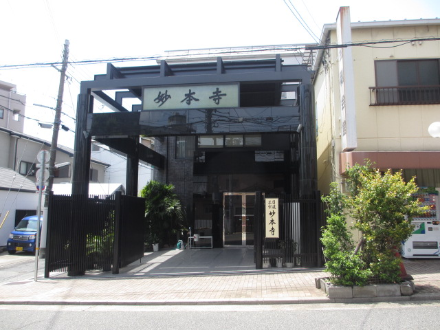
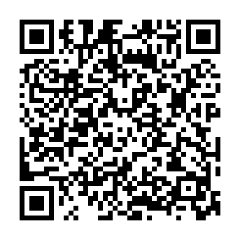

電話
参拝時間や当日の予定など、確実な確認が必要な場合はお電話でお問い合わせください。
078-861-4144
電話をかける電話・メール・アクセスの3つから、ご都合のよい方法をご利用ください。

妙本寺は神戸市灘区原田通3丁目1-1にあります。JR灘駅北口、阪急王子公園駅から徒歩約5分です。
ASK A QUESTION
お問い合わせでは、最初から詳しく説明する必要はありません。目的に近い文例を選ぶと、メールアプリに下書きが表示されます。内容を確認・修正してから、ご自身で送信してください。
個人情報や詳しいご事情を、最初からすべて伝える必要はありません。寺院からの返信の方法・受付時間などは、ご自身で確認してください。
このHPには自動予約・自動送信機能はありません。返信までの時間や受け入れ可否は確約していません。
以下の文例を開き、必要な部分だけコピーして、普段お使いのメールサービスに貼り付けてください。宛先は kobe.myouhonji@gmail.com です。このページから自動送信されることはありません。 電話での確認も可能です。
件名：妙本寺 初めての参詣について 初めて妙本寺への参詣を考えています。 希望する日時：（必要に応じて記入） 確認したいこと：（必要に応じて記入）
件名：妙本寺 法話会・行事について 法話会・行事についてお尋ねします。 関心のある行事：（必要に応じて記入） 希望する日程：（必要に応じて記入） 確認したいこと：（必要に応じて記入）
件名：妙本寺 法華講便りについて 法華講便りについて質問があります。 対象の発行年月：（分かる範囲で記入） 記事のテーマ：（分かる範囲で記入） 質問したいこと：（必要に応じて記入）
連絡するかどうかはご自身でお決めください。氏名・連絡先・詳しい事情をこのHPに入力する必要はありません。返信の時期は保証していません。
※ このHPは問い合わせ内容を収集・送信しません。メールアプリが開かない場合は、上のコピー用文例または電話をご利用ください。費用、参加条件、日時は寺院へご確認ください。
何から確認すればよいか迷ったときは、ご自身の目的に近い案内からお読みください。HPで分かること・寺院に確認することも一覧にしています。ご不明な点は電話またはメールでお問い合わせいただけます。
行事の日時や参加方法は変更される場合があります。訪問前にお電話でご確認ください。
先祖供養、塔婆、法事、葬儀について、妙本寺住職および信徒がお話を伺います。宗教上の儀式・法要については住職の指導に沿ってご案内します。

寺報・行事案内・掲示物などでは、このQRコードから今月の行事や初めての方へのご案内をご覧いただけます。